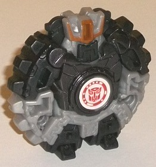
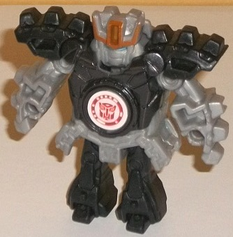
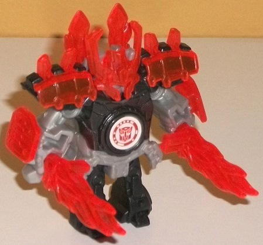
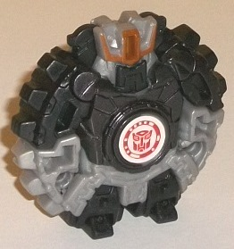
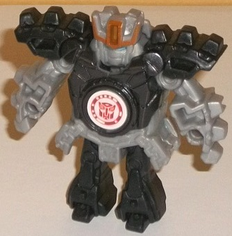
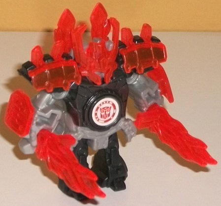
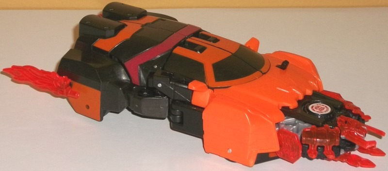
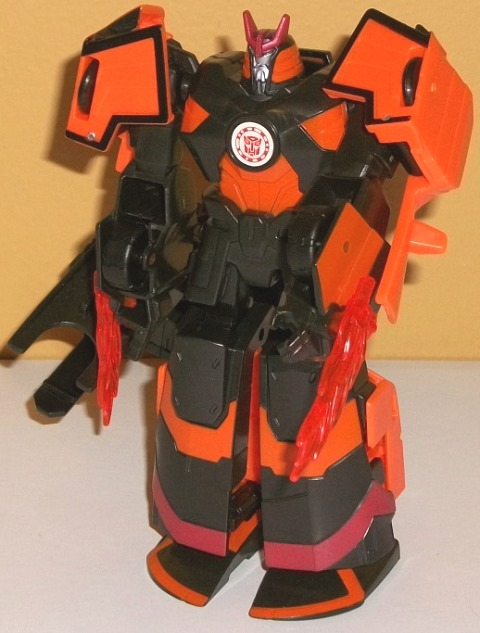

  
Size : Mini-Con
Difficulty of Transformation : Very Easy
Color Scheme : Charcoal black, light milky gray, transparent fiery orange, and some light metallic silvery blue and metallic bronze
Individual Rating : 4.0
Allegiances
: Autobot
 Jetstorm
Jetstorm



Size
: Mini-Con
Difficulty of Transformation
: Very
Easy
Color Scheme
: Charcoal black, light
milky gray, transparent fiery orange, and some light metallic silvery blue
and metallic bronze
Individual Rating
: 4.0
Jetstorm's alternate
mode-- like all
initial
Autobot Mini-Cons-- is a disc, made specifically
for the Drift Deployer figure to launch. In disc mode it's... well, pretty
obviously a humanoid form compressed together into a disc. Given the color
breakup of charcoal black with some light milky gray around the lower middle,
it's pretty easy to pick out Jetstorm's feet, waist, lower arms, and the
bronze paint on his head makes it pretty obvious as well, even if there's
a little black bit covering up his actual face. Still, as far as the general
silhouette, it does the job-- it fits in the disc slot of Drift, fires
off easily enough, and has the little ridges along the edges that help
it look not quite as much like the idea's a copy of Bakugan. The color
scheme of charcoal black and gray is just bland as all get out-- the charcoal
black is okay, but a "straight" black would have been better, and if you've
been reading my reviews for a while you know how I feel about that awful
light milky gray plastic. The only paint app in this mode isn't used to
breakup the colors in this mode, but rather just makes the head all the
more obvious.
To transform Jetstorm
to robot mode, you pull out the legs and the rest auto-folds out. There's
SUPPOSED to be a little "click" when you pull on the legs that locks everything
in place, but at least on this initial version mine doesn't; which is pretty
important, as without that click the legs can slide back into the body
if you put a little pressue on him and he'll go back into his disc mode,
which is annoying. Anyways, in robot mode his proportions are fairly decent
from a frontal view, with big shoulder pads, light gray arms and waist,
and relatively short legs (as is the case with most RID Mini-Cons). Compared
to most RID2015 toys, Jetstorm has quite a lot of mold detailing, with
little "gears" molded into the shoulders and knees and stone armor-like
detailing on the shoulders and waist to help him fit Drift's samurai look.
Unfortunately all this mold detailing is backed up with basically NO paint,
with the only paint being the aforementioned bronze on the headcrest and
light metallic silvery blue on the eyes. No other paint at all. As is the
case with most Mini-Cons, Jetstorm has no articulation in this mode-- the
one pose in the pictures above is it. Like most Minicons, though Jetstorm
does come with some awesome little transparent armor bits, and his are
a fiery orange that look really nice against his charcoal black plastic.
He's got shoulder pads with little spikes on them, wide lower arm pads,
a piece of back armor that makes it look like he has two swords sheathed
back there (he doesn't), a very cool knight/samurai-like helmet with long
horns, and two swords that look like their blades are made of fire that
he can hold in his hands. They all fit on fairly solidly on, with the exception
of the back armor because it's large and flat with relatively small tabs--
that one can fall off a little easily. All of these pieces can fit on the
toy in disc mode, though you have to take the swords off if you want to
fit Jetstorm in Drift's launcher. (Luckily, the swords can slot into the
back ends of Drift's vehicle mode to become "exhaust flames", which is
a pretty cool idea.)
 Autobot
Drift
Autobot
Drift


Size
: Mini-Con Deployer
Difficulty of Transformation
: Medium
Color Scheme
: Milky very dark charcoal
gray, orange, and some moderately dark dull red and light metallic silvery
blue
Individual Rating
: 6.8
To differentiate Drift
a bit from his other versions, this Deployer version isn't a full-blown
car, but rather a "Cybertronian version" of his alt mode. It MOSTLY looks
like his car mode, but the wheels are mostly gone, with only little bitty
wheels on the underside for rolling that aren't really visible. I kinda
like that aspect of it; what I don't like is it gives the toy an "easy
way out" when it comes to the back end, which is very obviously his lower
robot legs and doesn't really look like the back end of the car mode beyond
the wheel hubs on the sides. (There also is no real back end to this mode,
just consisting of the top of the robot knees and bottom of the robot upper
legs folded up. The hands stick out slightly from the back end as well.)
The middle side of this mode is also pretty weak-- not only are there no
visible car doors, but it's just a couple of hinges all packed together.
There's no real steamlined "solid" look there, and is my biggest issue
with this mode. There's a big chunk taken out of the front section of the
grill, which is for the Mini-Con launcher. Slot in a disc-shaped Minicon--
such as his buddy Jetstorm-- and make sure the middle bit of the launcher
is pushed back, and then toggle the little gray switch on the hood to launch
it. It actually is a fairly strong launcher, so no issues there. The mold
detailing is fairly basic, with only some barebones streamlined car mode
detailing on the front hood and the windows and top hood, while the back
section is, again, very obviously just the robot legs, with the four "bolts"
in the knees near the back and a few decorative lines. As far as the color
scheme goes, Drift's usual orange is very obviously there on the front
half, but there's just a bit of orange on the back end on the top and sides.
There's one dull red stripe near the middle, and paint apps around the
windows, but some important details are missing paint, such as the Drift
"headcrest" near the front. There's mold detailing for the rear window,
but it's unpainted charcoal gray plastic next to unpainted charcoal gray
plastic, so it's basically invisible. Speaking of the charcoal gray, I
think black would've looked a bit better-- this is a bit too "impure" of
a shade and just looks a bit "dirty", for lack of a better word. I also
would've liked more orange to keep Drift more in-line with his other toys
and just because I think it looks better.
Drift's transforamtion
is kinda cool, with the sides folding down or to the sides so that the
center front section of the launcher can fold out by itself behind Drift's
back. As far as the core robot mode, it LOOKS pretty good, and is actually
fairly show-accurate (minus needing more red lines and more orange, as
I talked about regarding his vehicle mode). Everything's pretty proportional,
with accurate shoulder pads, arm guards, big chunky lower legs, a detailed
samurai-esque "skirt", and a charcoal gray "X" across his chest. The lower
arms are a bit unfortunate when it comes to this mode, as they're a bit
hollow with the tires sticking out right behind the hands, which looks
weird. The feet are the front roof/windshield pieces, but they actually
work pretty well, even if they're not completely accurate. There is a bit
more orange as far as the color scheme goes, so the color break-up is definitely
better here, although there's still too much charcoal gray. The head is
detailed very well, with not only an accurate sculpt but orange on the
sides, a red head crest, a silver face, and light silvery blue eyes. Unfortunately,
despite his show-accuracy otherwise, Drift has almost NO articulation in
this mode. He can move his left arm forward at the shoulder. You can technically
bend each leg back at the knee, but this is solely part of his transformation;
there's no way to lock in the leg if you angle it back, it only connects
firmly to the lower leg if you keep the whole leg straight. You can also
move the right arm forward at the shoulder, but the launcher gimmick causes
the arm to swing back to its straight-down position as soon as you let
it go. Speaking of the gimmick, the launcher itself works solidly, but
the gimmick is VERY weak-- you're supposed to point this right arm forward
(his hand is molded to look he's pointing), and the launcher is supposed
to swing down and forward, and then you press down on the small wheel that's
now on the top of the launcher to launch the Mini-Con. Unfortunately, the
gears involved in this gimmick misalign/break quite easily, and did on
mine after only a few activations. Thus you have to manually move the launcher
down and out to launch it, and now the arm springs back downwards without
any associated gimmick movement to go along with it. Given the young audience
these are aimed at, this is a pretty big QC issue. One last thing worth
noting-- Jetstorm's fiery swords, which can be plugged into the back of
the car mode to become "exhaust flames", in those same slots are now on
the sides of his lower arms for Drift to wield as wrist swords, and is
a nice little extra.
Mini-Con Deployer Drift
is a bit of a mixed bag. On one hand, he's the only Autobot Mini-Con Deployer
mold there is, so if you want a larger robot to launch Autobot Mini-Cons...
well, you don't really have another choice. His car mode is decent, but
not great (mainly because the back half is just the lower robot legs).
His robot mode LOOKS very accurate-- borderline amazing, actually-- but
he has almost no articulation, and his auto-launch gimmick in that mode
breaks easily (though the launcher itself is pretty solid, and I suppose
that's the more important part). Jetstorm has some pretty cool armor bits,
but his ability to "lock" in robot mode is a bit weak and just in general
he's one of the weaker RID Mini-Con molds. Recommended (obviously) if you
want an Autobot deplouer, or an accurate Drift in robot mode-- but don't
expect him to move much.
Reviews by Beastbot